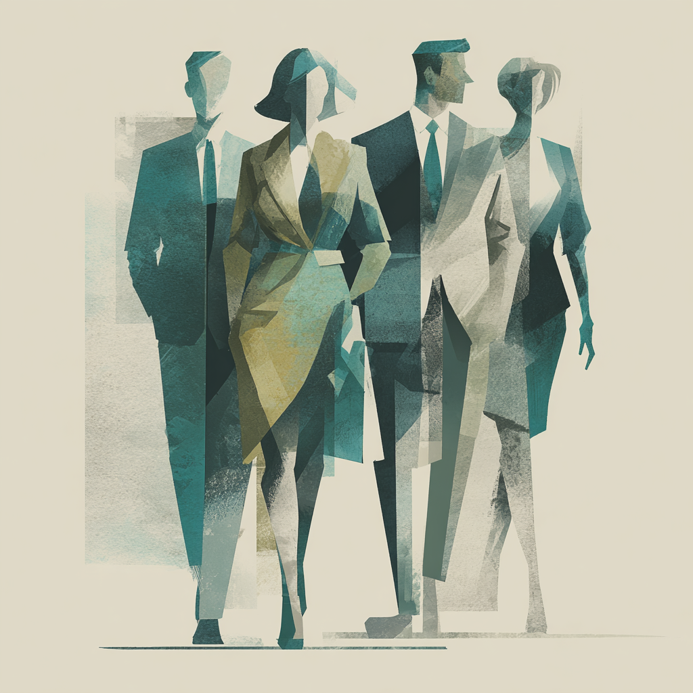
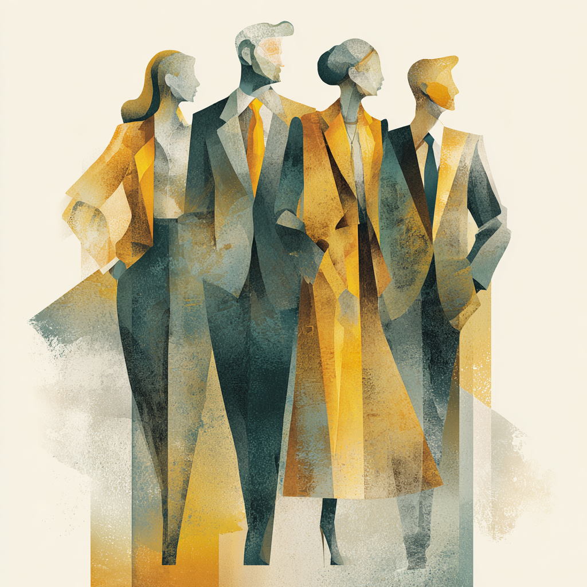
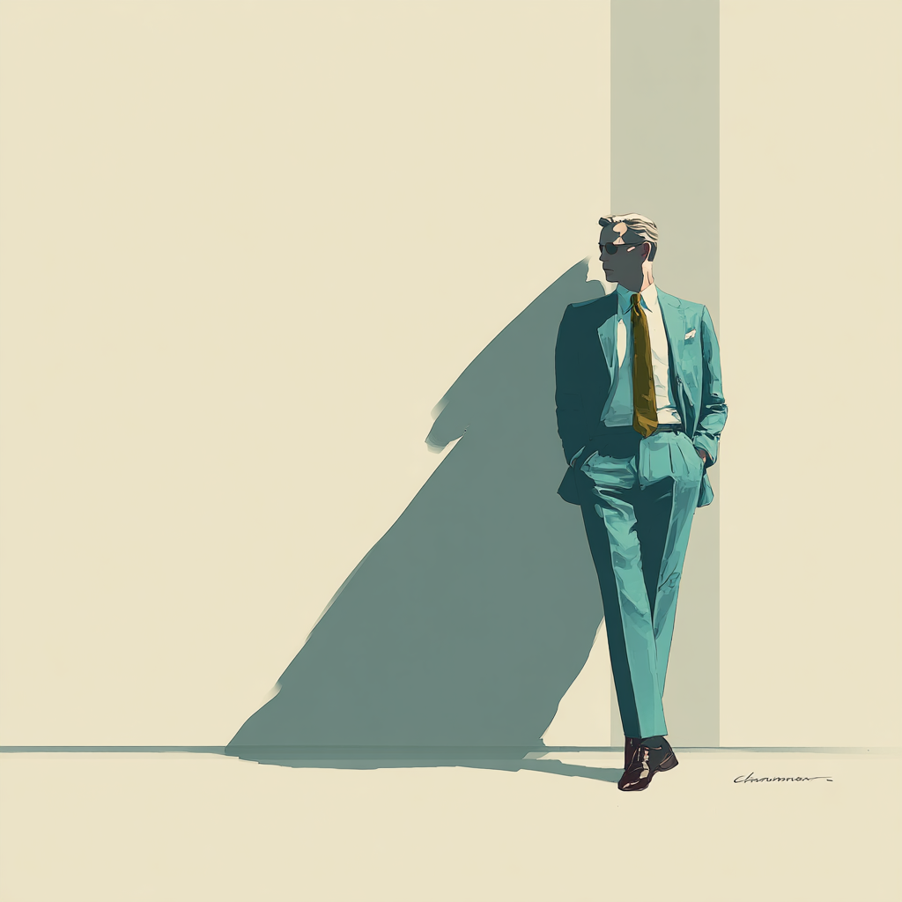

Ridgeline · The Committee
Two councils argue the deal. You make the call.
Before a CIM ever lands, meet the room. Ridgeline doesn't hand you a number from nowhere. It runs the deliberation of a strong investment committee — one council building the case, one hunting what kills it — and leaves the decision exactly where it belongs.
It exists to make your judgment faster and harder to fool. Never absent.
Built to disagree
The Partner vs. The Examiner
They sit on opposite benches on purpose. One is paid to want the deal; one is paid to find how it dies. The tension between them is not a bug to smooth over — it is the product. We surface the fight; we never average it into a bland middle.

Conviction Council · builds the case
The Partner
“A good company is not a good deal. Build the case on a floor you could stand on, and a price you'd still pay if the multiple never moved.”
Constructs the strongest honest bull case, the way the firm actually makes money — protected downside and value created by hand, not multiple expansion or a great story. Proposes an asset-quality grade and a walk-away ceiling. Four sub-voices hold it in tension:

Scrutiny Council · hunts the kill
The Examiner
“Every deal has a way it dies. My job is to find it first — before the firm wires the money, not after.”
Builds the list of what kills the deal, ranked most likely and most severe first, each with its mechanism, its source, and a severity. Doesn't soft-pedal a kill to keep a deal alive; doesn't invent one to look thorough. Four sub-voices do the hunting:
Neither bench gets the last word. The Partner can't talk the kill list down; the Examiner can't write the case. A confirmed hard stop, or an unprotected downside, is a pass — no matter how good the story.
The arbiter · not a fifth lens
The IC Chair
“Two councils argued the deal, one for and one against. I weigh them, decide where they conflict, and put my name on the number.”
Brings no lens of its own — it brings the gavel. It weighs conviction against scrutiny and adjudicates where they disagree, deciding which read carries on the evidence. When the fight can't be settled, it names the swing factor as the thing the decision turns on. It owns the one thing neither council may set:
It adjudicates — it never averages. Two tracks, never one number. A 6 that's secretly a 4 and an 8 averaged together hides the cardinal error.

The Chair owns the verdict. You own the decision.
The verdict is a recommendation, fully reasoned and fully sourced — built so you can click any part of it and land on where it came from. The machine never makes the call. It makes the call defensible. The weight stays on your shoulders. Your arms are just stronger.
What it refuses to be
- A confident answer with no source to click into.
- A fabricated comp, number, or precedent — the one unforgivable failure.
- One black-box score standing in for the reasoning behind it.
- Disagreement smoothed into a bland middle.
- Generic benchmarks and vendor-speak in place of the firm's own framework.
What it is
- Every claim one click from the page it came from.
- “Not evidenced in what was provided” — a complete, honest answer.
- Two tracks held apart: asset quality, and price.
- The fight between the councils, surfaced, not averaged.
- Scored against this firm's framework, history, and language.